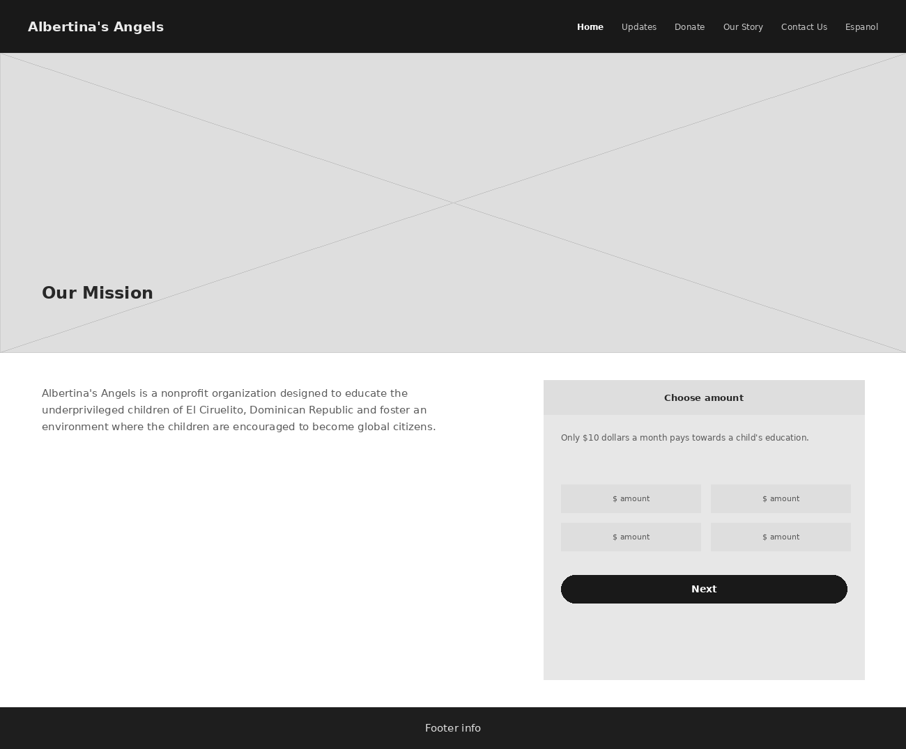
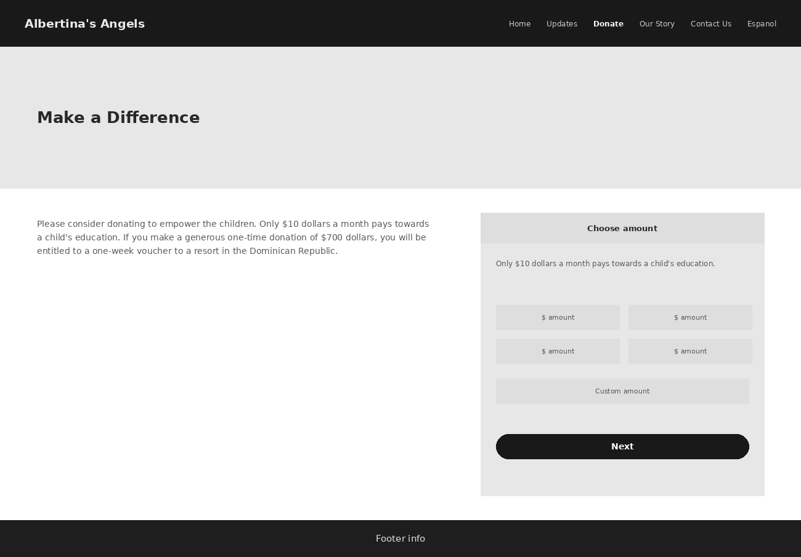
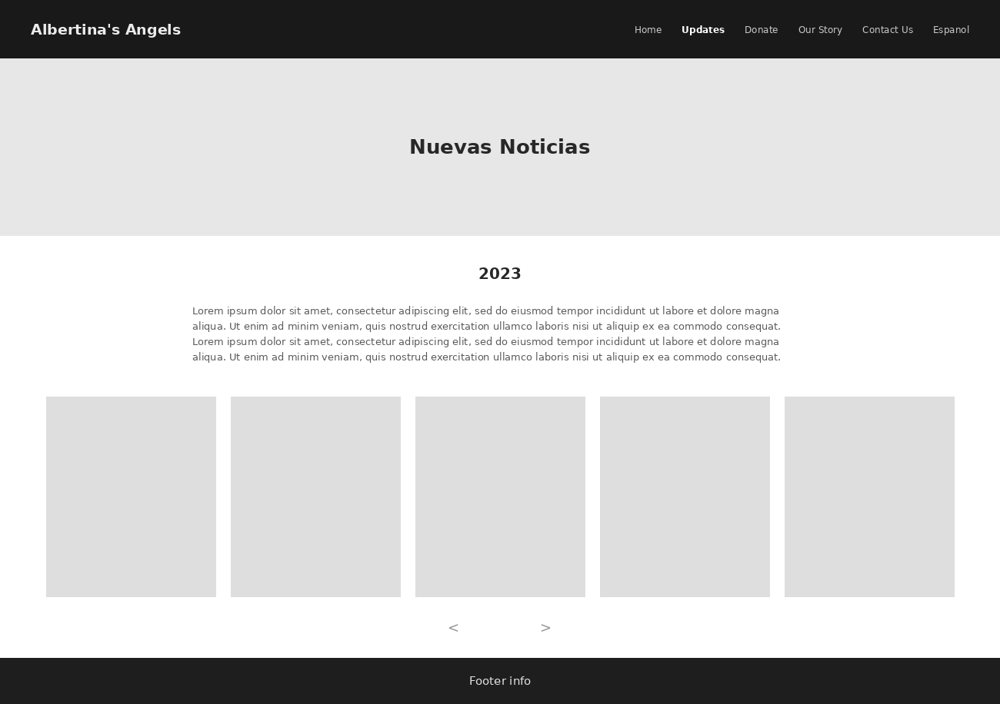
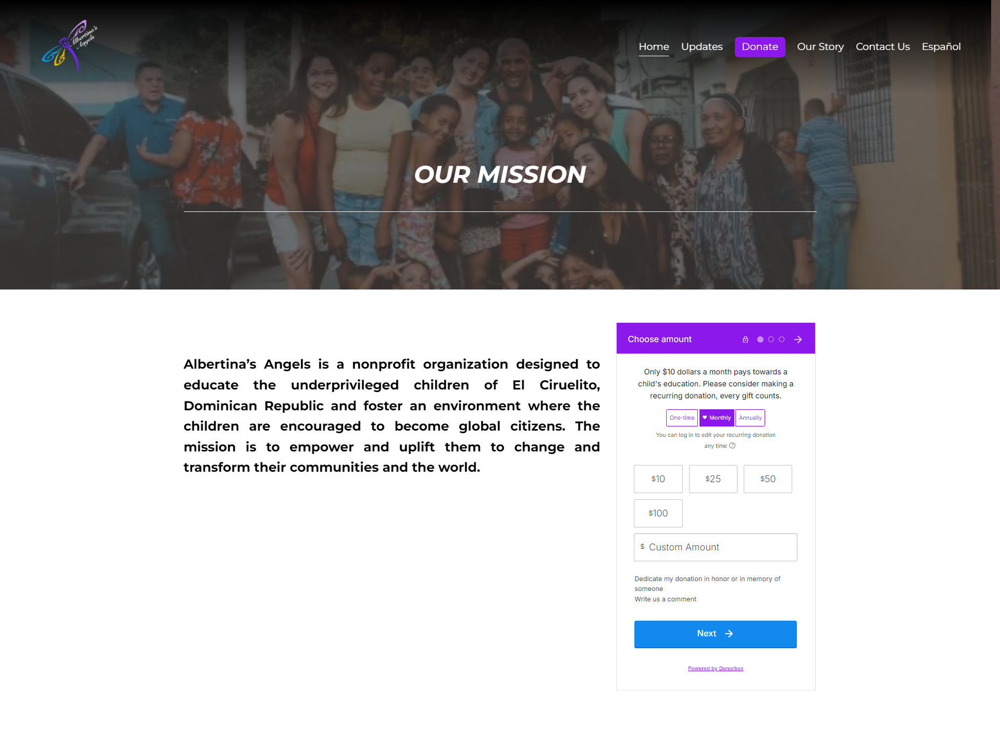
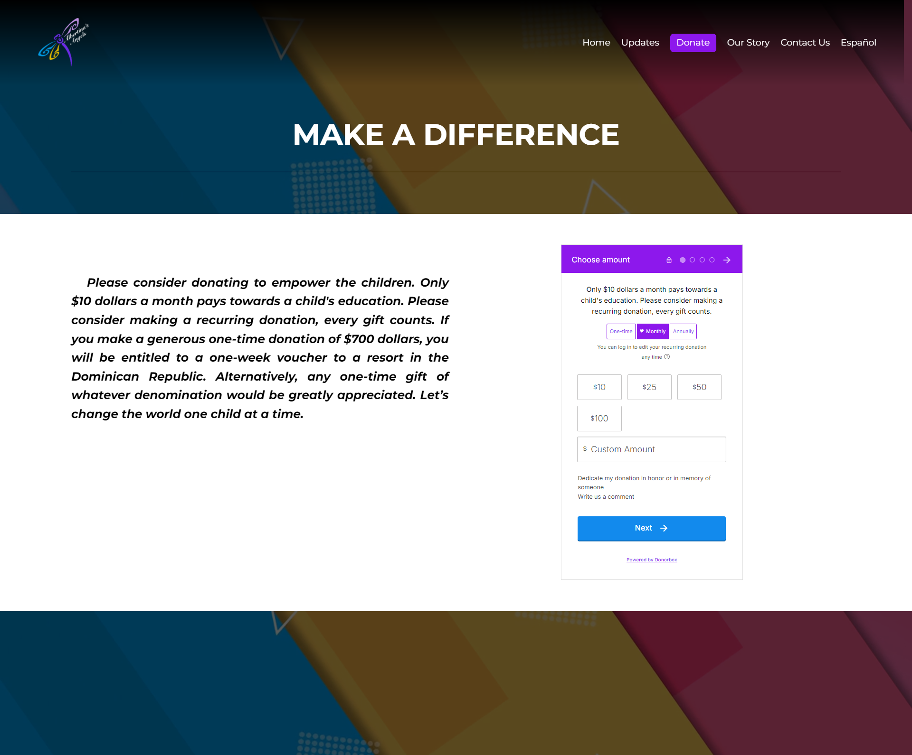
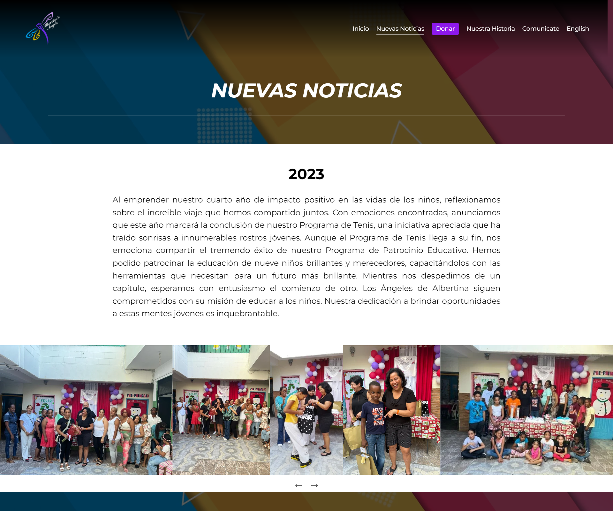

A Family's Memory, Made Legible To Strangers.
Brand identity through full site build for a nonprofit that started with nothing: no name recognition, no visual identity, and no way for anyone outside the founders' own circle to give with confidence.
Scroll to begin ↓"They had a mission worth funding and no way to make a stranger believe it. I built them one, from scratch."
The Problem
Albertina's Angels started with nothing. No name recognition, no visual identity, no website, no way for anyone outside the founders' immediate circle to give money with confidence. The founders, a mother and daughter, had a genuine mission: educating underprivileged children in El Ciruelito, Dominican Republic. What they didn't have was any way to make that mission legible to the people most likely to fund it, which was mostly their own friends, family, and community.
That's a quieter trust problem than most nonprofits face. They weren't trying to win over cold, skeptical strangers. The audience already had goodwill toward the founders going in. What was missing was a reason to believe the organization itself was real, organized, and capable of doing something with someone's money.
The brand and the site had to carry that legitimacy on their own. But there was something more personal underneath it too: the organization is named after the founders' own mother and grandmother, Albertina. Building the identity meant honoring a private family story while still reading as a credible, fundable nonprofit to people who'd never hear that story firsthand.
Research & Discovery
There was no donor base or existing site to study yet, so there was no formal user research here, no surveys, no analytics. What I had instead was direct, ongoing access to the two people who knew this audience better than any survey could tell me, the founders themselves.
We worked together closely over the full three years, and the conversations weren't a one-time intake. They were a running back-and-forth. I'd bring a direction or a decision, and they'd bring their read on how the people in their own circle, the friends, family, and community they were trying to reach, would respond to it. That's a real source of insight, but a specific kind, relayed impressions from people close to the donors, not the donors speaking for themselves. I treated it that way rather than mistaking it for harder evidence.
Define & Ideate
The defining tension of this project wasn't a disagreement between me and a stakeholder. It was internal to the brief itself: build something personal and specific enough to be true to the founders' own story, while reading as a legitimate, professional nonprofit to people who'd never hear that story directly.
An identity true enough to the founders' story that it doesn't feel hollow to them, true to a real memory and a real name.
Legible enough to a stranger that it still reads as a real, organized nonprofit worth trusting with money.
Every brand decision after that got measured against both halves of that sentence.
Where the identity comes from
Albertina is the founders' own mother and grandmother. The logo's dragonfly motif grew out of a specific memory: dragonflies appearing while the founders were visiting a loved one. That's not the kind of brand concept you'd get from a typical discovery exercise. It came from lived experience, and my job was to translate it into something that could function as a nonprofit's visual identity rather than stay a private family symbol.
The colors weren't mine to choose. These were Albertina's own favorite colors, and the founders wanted them in. The same person who inspired the mission also shaped what it looks like.
Design Decisions
Wireframes first
Before any color, logo, or real copy went into Squarespace, I blocked out the homepage, the donate page, and the updates feed at low fidelity, gray hero blocks, placeholder mission copy, a bare donation widget placeholder standing in for whichever platform we'd eventually land on. Structure got agreed on before anything had to compete with a photo or a brand color.



Homepage, donate, and the updates feed, worked out in gray boxes before the dragonfly mark or the founders' colors touched a single page.
Brand identity
The logo had to carry a real story without turning into something too literal or too precious to function as a working nonprofit mark. The goal wasn't to illustrate the memory itself, it was to extract something usable from it: a recurring visual element that could sit on a homepage, a donation page, or printed material without needing the backstory explained every time. The story gives the mark meaning for people who know it. The mark still has to work for people who don't.
Information architecture and bilingual structure
The bilingual English and Spanish structure wasn't part of the original scope. It came later, once it was clear the audience reached beyond English-speaking friends and family into Spanish-speaking community and family connections tied to the mission in the Dominican Republic.
The founders rejected Squarespace's built-in auto-translate, the translation read too literal, not how they'd say it, and translated the copy themselves by hand instead. I built the Spanish pages as their own dedicated pages, then went into Squarespace's code settings to write logic that shows or hides pages depending on which language a visitor has selected, a feature Squarespace doesn't give you out of the box.
The donation platform pivot
This is the clearest messy-middle moment of the whole project, and I don't want to smooth it over.
Designing around Squarespace's native donation tooling, building the layout and flow assuming that's what we'd ship with.
Donorbox, after the founders asked for more control over donor data, more control over how the donation box itself looked, and a wider range of payment methods than Squarespace's native option supported.
Donorbox wasn't built to live inside Squarespace, and the embed didn't sit well by default. I used custom CSS injection to restyle it so it didn't look like a foreign widget dropped onto the page, and worked through iframe sizing so it held up across screen sizes instead of breaking the layout. A lot of designers would have flagged that limitation and waited on a developer. The front-end background let me just go fix it.



Where This Landed
No traffic data or conversion tracking exists for the three years this project has been live. What does exist is a concrete outcome: the site has raised $11,304.70 to date across an estimated 375 individual gifts, averaging approximately $30 each. That figure was already recorded in Donorbox. I requested it directly from the founders while preparing this case study, since it had not previously been compiled. Following launch, the founders also reported that friends and family found the donation flow intuitive and easy to use. That feedback is secondhand and informal, but combined with the donation total, it represents the strongest available evidence of the project's impact.
What I'd do differently: collect donor feedback directly, through a simple post-donation prompt asking what nearly prevented someone from giving. The donation total confirms how much this effort raised. It does not explain why donors gave or what almost stopped them, and closing that gap remains the next step for this project.